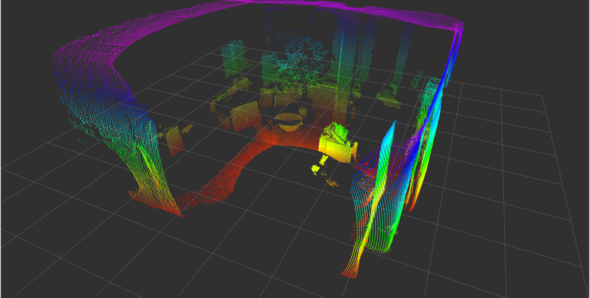

ifm3d-ros2 overview
This documentation is formatted to be read on www.ifm3d.com.
Warning
The ifm3d-ros2 package has had major changes recently. Please be aware that this might cause problems on your system for building pipelines based on our old build instructions.
Note
This release is intended to be used with the O3R camera platform ONLY. For other ifm cameras (e.g. O3D3xx and O3X2xx) please see the tagged releases 0.3.0 and 0.7.0 respectively.
ifm3d-ros2 is a wrapper around ifm3d enabling the usage of ifm O3R ToF camera platform from within ROS 2 software systems.

Software Compatibility Matrix
Release versions
ifm3d_ros2 version |
ifm3d version |
(O3R) embedded FW versions |
ROS 2 distribution |
|---|---|---|---|
1.1.0 |
1.2.6 |
1.0.14 |
Humble |
1.0.1 |
0.93.0 |
0.14.23 |
Foxy |
Deprecated ifm3d-ros2 Versions
The following versions are deprecated and no longer supported.
ifm3d_ros2 version |
ifm3d version |
ROS 2 distribution |
|---|---|---|
1.0.1 DEPRECATED |
0.93.0 |
Galactic |
1.0.0 DEPRECATED |
0.92.0 |
Galactic |
0.3.0 DEPRECATED |
0.17.0 |
Dashing, Eloquent |
0.2.0 DEPRECATED |
0.12.0 |
Dashing |
0.1.1 DEPRECATED |
0.12.0 |
Dashing |
0.1.0 DEPRECATED |
0.12.0 |
Dashing |
ToDo
We are currently working on rounding out the feature set of our ROS2 interface. Our current objectives are to get the feature set to an equivalent level to that of our ROS1 interface and to tune the ROS2/DDS performance to optimize the usage of our cameras from within ROS2 system (for different DDS implementations). Thanks for your patience as we continue to ensure our ROS2 interface is feature-rich, robust, and performant. Your feedback is greatly appreciated.
Known Issues
Installing ifm3d API with it’s default runtime libs may result in multiple versions of glog on the system: this results in a compilable but non-functional ROS node. Please either use the glog version as included in your Ubuntu release (if compatible) or uninstall any incompatible lib version before installing the ifm3d required version. We are working on providing a fix to the underlying API which removes the GLOG logging from the API.
LICENSE
Please see the file called LICENSE.